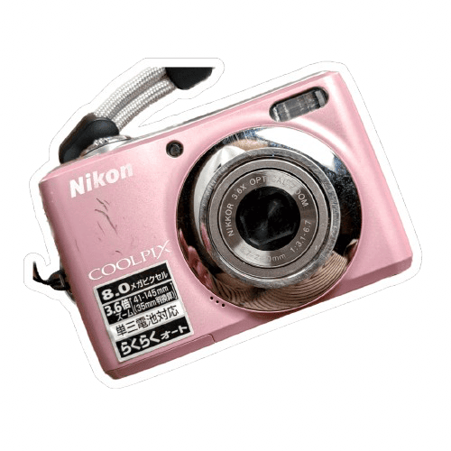
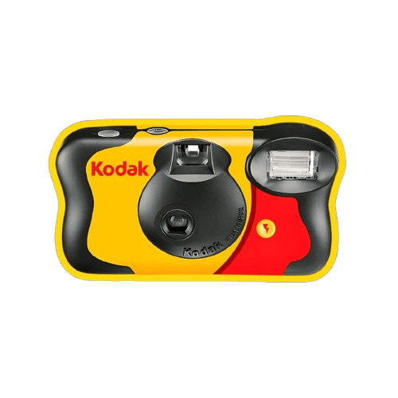
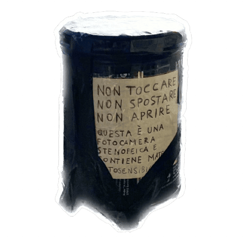
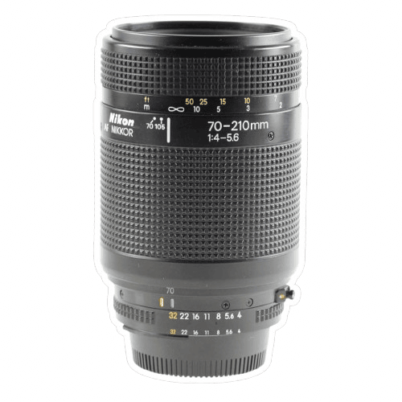
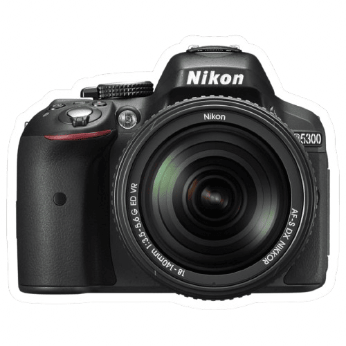
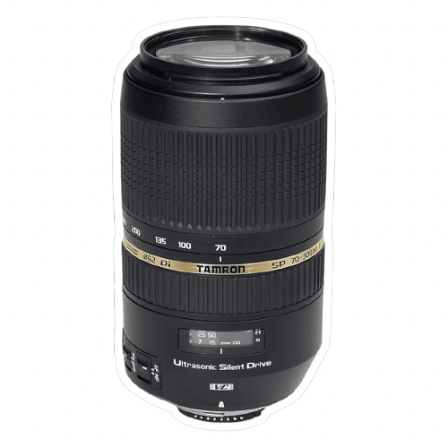
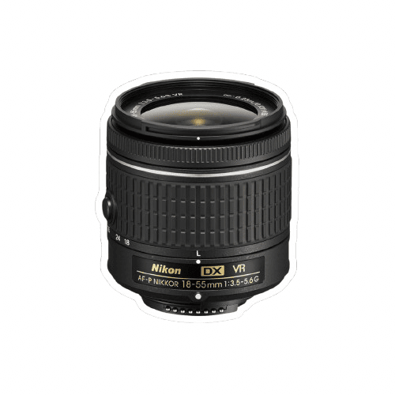

About

My passion for the world of photography has early age roots. I don't remember when it actually started, but I know that I had my very first shots with a pink compact Nikon Coolpix (maybe an L21??)...
Then, at 15 I had my analog mania, and I shot with some disposable cameras, even though they were really expensive and not very eco-friendly, so it happened that I had to reload a camera with a new film roll (and not rarely I made a mess :,) because trust me, it's not the easiest thing in the world, given that disposable cameras load the film unrolled!!). I also began experimenting a little bit with film soups, with the worst ingredients you could ever think about.
Since January '26, I've been conducting an experiment, still ongoing (it's going to last until July), with a technique called "solarigraphy", which is really what it means: a tracking of sun on photosensitive paper, by exposing the paper for weeks, months and potentially years! It's obviously a long-exposure technique which I consider to be of extraordinary charm, because the paper is placed in a dark and protected can (or similar), where the sunlight can only enter through a tiny hole, and over the time impresses its path on the paper, to the point the light oxidizes the emulsion of the photographic paper, causing it to blacken in the areas affected by the sunlight. Thanks to that, there's no need for chemical development, creating an image visible (a negative); the only precaution to be taken, is to invert the image's colors through a scanner immediately after the end of the exposure time wanted, because the paper remains photosensitive and it may darken quickly!
My latest purchase: Tamron AF 70-300mm lens, which I took with me on my last trip to the Netherlands.
Wish list: I'd like to try a different body equipment and shoot with a Fuji or a Sony Alpha camera.
My dream: I wish I could be able to develop a film roll and print my own photos in a darkroom.
The idea for this web-site's logo came to me during the work-in-progress. I thought about the shape of a camera flash, and I associated it with an asterisk. So I put the asterisk in a clear context, in the Home-page above the camera and close to the site's name "Just Shoot It!". The asterisk is not just a symbol that represents the flash; it's a true statement: it’s what makes a subject that would otherwise be dark bright and brilliant, is the essential tool for a professional photographer, and its brief but intense light reminds me of how special this tool has been over the years, ever since the first invention of flash, the Blitzlichtpulver, a magnesium mixture that caused a very brief spark to ignite.
The name for this website came naturally to me, thinking about the most intimate and spontaneous way of seeing the world of photography. As I said, I started taking photos through the lens of a camera at a very young age, and the only things that were driving me back then were curiosity and that whispering inner voice telling me "Just shoot it", in the most natural way, without any particular technique or skill to do it.
And here we are, many years have passed, I've experimented a lot, trying out different photographic techniques, gear and styles, but I still enjoy it today because I'm learning step-by-step, having every day more acquaintance with it, driven only by my curiosity.




Body
Lens
This is a University project for the Digital Humanities exam of Web Design and Programming, University of Pisa (IT). Some of the website's functionalities may actually be for exam's purposes only. Thank you for the attention. :)